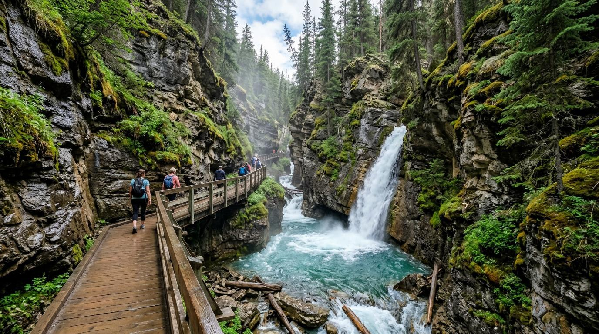

← 트래킹
🥾 존스턴 캐년
Johnston Canyon
⭐ 협곡을 따라 걷는 로키 최고의 인기 트래킹

📅 우리 일정
Day 2 저녁
🥾 코스 선택
Lower Falls
⭐ 가장 인기 있는 폭포 전망대
🚶 2.4km
⏱ 45~60분
💪 쉬움
Upper Falls
⭐ 더 웅장한 폭포를 만나는 대표 코스
🚶 5.4km
⏱ 2시간
💪 쉬움
Ink Pots
⭐ 맑은 샘과 초원을 만나는 장거리 코스
🚶 11.7km
⏱ 4~5시간
💪 보통
📍 Google Maps
← 트래킹